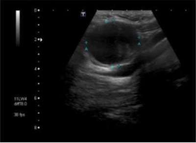
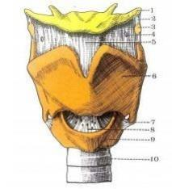

Questão 1 · Cisto Tireoglosso · 4000123458A técnica operatória para ressecção do cisto tireoglosso inclui:
A identificação e preservação dos nervos laríngeos recorrentes.
B inspeção da região cervical para identificar cistos branquiais.
C ressecção da porção central do osso hioide.
D envio da peça para exame anatomopatológico por congelação.
E realização de istmectomia associada à ressecção.
Questão 2 · Características Gerais · 4000111191Homem, 50 anos de idade, fumante e estilista, apresenta nódulo de 3 cm cervical baixo à esquerda (Nível IV) que percebeu há 1 mês. Sem outras queixas. O nódulo é móvel e único. Cavidade oral e orofaringe normais. Qual é a melhor conduta?
A Biópsia incisional do nódulo com exame de congelação.
B Biópsia por agulha grossa do nódulo guiado por ultrassom e exame de congelação.
C Biópsia excisional do nódulo com exame anatomopatológico em parafina.
D Punção aspirativa do nódulo com agulha fina e análise de citologia oncótica.
Questão 3 · Cavidade Oral · 4000102647No tratamento do carcinoma espinocelular da língua, foi ressecado o tecido broconectivo das seguintes regiões: submentoniana, submandibular e jugulo carotídea alta e média. Este procedimento cirúrgico é descrito como:
A Linfadenectomia cervical profunda
B Esvaziamento cervical seletivo
C Esvaziamento cervical radical modificado
D Esvaziamento cervical radial clássico
Questão 4 · Cisto Tireoglosso · 4000084514Uma criança de 2 anos é trazida ao pronto-socorro porque a mãe percebeu lesão volumosa e progressiva há 3 dias no pescoço. Não houve febre e a alimentação está normal. Ao exame físico, a massa é indolor, na linha cervical média, sem sinais ogísticos, se movimenta com a mastigação e mede cerca de 2 cm de diâmetro. A avó havia morrido com neoplasia de tireoide. Nesse caso, o mais provável diagnóstico é:
A Linfadenite.
B Cisto tireoglosso.
C Higroma cístico.
D Tireoidite de Hashimoto.
Questão 5 · Características Gerais · 4000072774Qual dos fatores abaixo não está implicado no aumento do risco para desenvolvimento de câncer de cabeça e pescoço?
A Etilismo.
B Infecção pelo vírus Epstein Barr.
C Infecção pelo Helycobacter pylori.
D Infeção pelo HPV.
E Tabagismo.
Questão 6 · Fístulas Branquiais · 4000062423Em relação às massas císticas benignas cervicais, afirma-se que: I - Os cistos e fístulas branquiais derivados da primeira fenda branquial localizam-se ao longo da borda anterior do músculo esternocleidomastóideo; II - Os cistos do ducto tireoglosso são localizados na linha média ou paramediana ao osso hióide. Sua remoção deve incluir a retirada da porção central do nosso hióde; III - os hígromas císticos tendem a ocupar os tecidos moles adjacentes, o que dificulta a sua remoção completa. As alternativas corretas são:
A Somente I e II são corretas;
B Somente I e III são corretas;
C Somente II e III são corretas;
D Todas são corretas;
E Todas são incorretas;
Questão 7 · Laringe · 4000053718A disfonia na neoplasia de laringe:
A Somente ocorre em tabagistas crônicos.
B Surge principalmente por paralisia vocal.
C Ocorre por comprometimento da mucosa do bordo livre da prega vocal.
D Surge tardiamente na maioria dos casos.
E É sintoma raro.
Questão 8 · Drenagem Linf ática Pref erencial · 4000040987Em relação a metástases em linfonodos cervicais, assinale a alternativa que indica a localização do linfonodo com o sítio de câncer primário correspondente.
A Submentoniano, submandibular; lábio e orofaringe
B Jugulares superiores; lábio e pele
C Supraclaviculares; mama, pulmão e trato gastrointestinal
D Suboccipitais; nasofaringe e couro cabeludo
Questão 9 · Cisto Tireoglosso · 4000030098Criança, 3 anos, apresenta tumoração na linha média do pescoço, que apareceu há 4 meses, é móvel à deglutição. Não há dor no local, nem sinais infamatórios. tem caráter cistico ao ultrassom. O diagnóstico mais provável é
A cisto tireoglosso.
B higroma cístico.
C cisto branquial.
D linfadenopatia.
E teratoma.
Questão 10 · Cisto Tireoglosso · 4000020886Um paciente de 6 anos apresenta quadro de massa cervical, de consistência cística, de cerca de 2cm, localizada anteriormente na linha média ao nível do osso hioide, com evolução de 2 anos e evolução com abscedação em 2 ocasiões. Qual é a hipótese diagnóstica mais provável?
A cisto tireoglosso
B cisto branquial
C cisto tireoidiano congênito
D neoplasia cística da glândula salivar sublingual
E linfonodomegalia
Questão 11 · Cisto Tireoglosso · 4000019541Sobre o cisto tireoglosso, assinale a CORRETA:
A é tratado cirurgicamente pela técnica de Duhamel.
B apresenta mobilidade com a protrusão da língua.
C evoluem para linfomas se não tratados.
D sempre aparecem com sinais flogísticos locais.
Questão 12 · Cisto Tireoglosso · 4000013335Um paciente de 17 anos de idade busca atendimento por causa da presença de massa cervical em linha média. Ao exame, apresenta aspecto cístico. A respeito desse caso e com base nos conhecimentos correlatos, assinale a alternativa correta.
A O tratamento inicial é o procedimento conhecido como cirurgia de Sistrunk, independentemente da presença de infecção.
B Paralisia temporária unilateral da prega vocal é uma complicação frequente do tratamento desse tipo de patologia.
C Caso confirmada a hipótese de cisto tireoglosso no transoperatório, a retirada do hioide não influi no risco de recidiva no pós-operatório.
D Bócio mergulhante deve ser considerado, nesse caso, a idade do paciente.
E Deve-se avaliar a tireoide, seja ao exame físico, seja com métodos de imagem para evitar complicações no pós- operatório.
Questão 13 · Benignas · 4000006578Os tumores de glândulas salivares são incomuns e representam 2% de todas as neoplasias de cabeça e pescoço. Qual o tipo histológico e qual a glândula mais comprometida?
A Adenoma pleomórfico e parótida.
B Adenoma pleomórfico e sublingual.
C CEC e parótida.
D CEC e sublingual.
Questão 14 · Indicações · 4000000673Assinale a alternativa correta com relação à traqueostomia de urgência em crianças.
A Em qualquer situação, só deve ser realizada após várias tentativas de intubação.
B Deve ser realizada como procedimento de escolha para garantir a via aérea em todos os casos de sintomas obstrutivos altos.
C É um procedimento tecnicamente difícil em vias aéreas pequenas.
D Deve ser realizada, apenas, após a falha de uma cricotireoidostomia.
Questão 15 · Cisto Tireoglosso · 4000118381Júlia, 18 meses, apresenta tumoração indolor, em região cervical. Ao exame físico, nota-se uma lesão cística em linha média, que se move cranialmente com a deglutição ou protrusão da língua. O diagnóstico mais provável é:
A tireoide ectópica.
B linfadenopatia.
C teratoma.
D cisto tireoglosso.
E cisto branquial.
Questão 16 · Complicações · 4000114893Sobre complicações da cirurgia de esvaziamento cervical radical modificado, não podemos encontrar:
A Disfunção de nervo espinhal acessório, ocasionando dificuldade no movimento de rotação cervical e movimento de rotação do membro ipsilateral ao esvaziamento.
B Paralisia de hemilaringe ao lado ipsilateral do esvaziamento, por lesão/paresia do nervo vago.
C Elevação da himicúpula diafragmática ipsilateral ao esvaziamento por lesão do nervo frênico.
D Desvio da língua para o lado, por lesão/paresia do nervo hipoglosso.
E Desvio de comissura labial, por paresia/lesão do nervo marginal mandibular do nervo facial.
Questão 17 · Manejo PósOperatório · 4000100440O cuidado pós-operatório do paciente traqueostomizado, como observar a xação da cânula de traqueostomia, previne a mais temida complicação: ____________________ porque ____________________.
A hemorragia maciça – houve trauma na artéria inominada
B pneumotórax – ulcerou a parede posterior da traqueia
C sangramento – peritraqueostomia; o tecido de granulação é exuberante
D broncoaspiração – é frequente a ruptura do cuff da cânula
Questão 18 · Cisto Tireoglosso · 4000095549Assinale a alternativa INCORRETA com relação ao cisto de ducto tireoglosso.
A Um cisto de ducto tireoglosso é uma lesão na linha média do pescoço que se origina na base da língua, no forame cego, e desce através da porção central do osso hióide.
B É uma das lesões de linha média do pescoço mais comuns em crianças em idade pré-escolar.
C Embora possam ocorrer em qualquer lugar, desde a base da língua até a glândula tireoide, a maioria é encontrada no osso hióide ou logo abaixo dele.
D A falha na remoção completa dos tecidos do cisto tireoglosso raramente resultará em recorrência.
Questão 19 · Benignas · 4000077655Estima-se que mais de 80% das neoplasias de glândulas salivares comprometem as glândulas parótidas. Também está demonstrado que a maioria destas neoplasias são de natureza benigna. Qual dos tumores abaixo é o mais encontrado nas glândulas parótidas?
A Tumor Papilifero.
B Carcinoma Mucoepidermoide.
C Adenoma Pleomórfico.
D Carcinoma adenoide cístico.
E Tumor de Warthin.
Questão 20 · Papiloma Nasal · 4000073348O papiloma é um tipo e tumor que, quando acomete a cavidade nasal e seios paranais, pode causar epistaxe, congestão nasal, cefaleia e dor na face. O tratamento recomendado para esse tipo de tumor é:
A ressecção radical com reconstrução óssea
B quimioterapia sem tratamento cirúrgico
C radioterapia sem tratamento cirúrgico
D ressecção local com margem negativa
Questão 21 · Atresia de Coanas · 4000061352Um recém-nascido a termo do parto vaginal, de gestação sem complicações. Ela tem aparência normal, mas apresenta desconforto respiratório quando para de chorar. Quando chora ca rosada, quando não chora o trabalho respiratório é intenso e começa a ficar cianótica. Qual das opções a seguir é a explicação mais provável para esses sintomas?
A Atrésia de coanas.
B Hérnia diafragmática.
C Aspiração de mecônio.
D Narcose neonatal.
E Pneumotórax.
Revisar: possível letra faltando em enunciado
Questão 22 · Cisto Branquial · 4000048213Quanto aos cistos branquiais, é correto afirmar:
A Podem apresentar-se intimamente relacionados ao feixe jugulocarotídeo e aos IX, X e XII nervos cranianos.
B Quando existe fistula, o orifício localiza-se geralmente posterior ao músculo esternocleidomastóideo.
C A bilateralidade está presente ao redor de 20% dos casos.
D Quando puncionados, a presença de líquido incolor (água-de-rocha) é patognomônica.
Questão 23 · Características Gerais · 4000048197As neoplasias da cabeça e pescoço são causa importante de morbidade e mortalidade. É correto afirma:
A As neoplasias de cabeça e pescoço tem clara associação com tabagismo e etilismo e incidem em ambos os sexos em uma proporção de 1:1
B O câncer de hipofaringe é o que tem maior mortalidade, seguido do câncer de laringe
C Os principais fatores de risco associados são o tabagismo e o etilismo, além da desnutrição, síndrome de Plumer- Vinson, HPV , vírus Epstein-bar e carcinógenos químicos.
D O CEC é a histologia mais comum entre as neoplasias da cabeça e pescoço, seguido pelos linfomas e adenocarcinomas.
Questão 24 · Cisto Tireoglosso · 4000036775Criança de 10 anos é trazida pela mãe que relata nódulo cervical anterior, com certo aumento nos últimos meses. Ao exame, constata-se que o nódulo mede 2x2cm, e encontra-se na linha média, de consistência rme e bem delimitado, que aumenta com a protrusão da língua. O diagnóstico dessa criança é:
A cisto branquial.
B linfoma.
C bócio tireoidiano.
D hemangioma.
E cisto tireoglosso.
Questão 25 · Características Gerais · 4000035327Outra questão a ser considerada no preparo para a radioiodoterapia RIT deve ser relativamente a dieta pobre em iodo, os pacientes com indicação de RIT devem ser orientados a manter, de forma regular, tratamentos de possíveis comorbidades durante todo o período de pré e após tratamento com radioiodo. Sobre isso, NÃO podemos considerar adequado que:
A A dieta pobre em iodo cuja ingestão diária deverá estar abaixo de 10 mcg/dia.
B Inexiste consenso sobre o tempo necessário de dieta.
C Os pacientes devem ser recomendados a mantê-la por um período de pelo menos duas semanas antes da RIT, período este que pode sofrer variação de acordo com a região geográfica analisada (maior ou menor aporte regular de iodo na dieta e no ambiente).
D Essa medida tem como objetivo aumentar a avidez pelo iodo do tecido a ser tratado e deverá ser instituída independente do tipo de preparo, seja pela suspensão da tiroxina ou pelo uso do TSH recombinante.
Questão 26 · Técnica Operatória · 4000034528Sobre traqueostomias, é correto afirmar, EXCETO:
A O ideal é a realização no 1° ou 2° anel traqueal
B Não é considerado um procedimento de emergência
C A troca de cânula para metal deve ser após o terceiro dia do procedimento
D A estenose subglótica é mais difícil tratamento do que a estenose mais baixa.
Questão 27 · Cavidade Oral · 4000021640Sobre o carcinoma epidermóide de boca, assinale a alternativa CORRETA:
A É um dos tumores mais frequentes da boca, atrás apenas dos adenocarcinomas de glândulas salivares.
B O tratamento deve ser cirúrgico sempre que possível, e frequentemente é necessário realizar o esvaziamento cervical.
C A radioterapia é apenas indicada em tumores recidivados ou irressecáveis.
D O carcinoma epidermóide dificilmente metastatiza para linfonodos regionais mas frequentemente metastatiza à distancia.
Questão 28 · Cisto Branquial · 4000021273Um paciente adulto jovem (19 anos) apresenta lesão de consistência amolecida, com 7 cm de diâmetro, localizada no nível III à esquerda, anterior ao músculo esternocleidomastóideo, indolor à palpação e que, à PAAF, veio com o detalhe de lesão cística com presença de cristais de colesterol. Qual é a principal hipótese diagnóstica?
A cisto tireoglosso
B nódulo de parótida
C cisto branquial
D metástase de tumor de boca
E linfoma
Questão 29 · Laringe · 4000005994De acordo com o estadiamento TNM (UICC 2002), os tumores supraglóticos limitados à laringe com paralisia de prega vocal, que invade área pós-cricoide, tecidos pré- epiglóticos e espaço paraglótico ou que apresenta erosão de cartilagem tireoidea são classificados como:
A T1.
B T2.
C T3.
D T4.
Questão 30 · Cavidade Oral · 4000127531Paciente de 56 anos, tabagista de 80 maços-ano, etilista de 2 doses de aguardente e 1 garrafa de cerveja por dia, apresentou perda ponderal de 15 kg nos últimos 6 meses. No mesmo período, notou nódulo cervical à esquerda, endurecido e móvel, de crescimento lento. Há 3 meses percebeu irritação na garganta, principalmente com a ingesta de aguardente. Melhor conduta, considerando a principal hipótese diagnóstica:
A Ultrassonografia cervical e orientação sobre a importância de interromper o tabagismoe o etilismo.
B Exame cuidadoso da cavidade oral, Punção Aspirativa com Agulha Fina - PAAF etomografia do nódulo cervical.
C Biópsia aberta do nódulo do pescoço com anestesia local.
D Exames laboratoriais, incluindo hemograma e sorologias para toxoplasmose emononucleose.
E Arteriografia, para avaliar a relação do nódulo com os vasos cervicais.
Questão 31 · Cisto Branquial · 4000127530Paciente de 22 anos, com nódulo cervical lateral, medindo 3,5 × 2,4 cm, próximo ao ângulo da mandíbula direita, indolor, de consistência amolecida e limites precisos, fez biópsia por Punção Aspirativa com Agulha Fina − PAAF, com achado de lesão cística, sem sinais de malignidade. Melhor conduta:
A Avaliação cuidadosa da cavidade oral e da faringe, pois pode tratar-se de metástase de carcinoma.
B Tomografia para programar cirurgia, pois se trata de cisto branquial.
C Biópsia incisional, pois é preciso ter um exame histopatológico confirmado.
D PET-CT e cirurgia urgente, pois se trata de linfoma.
E Ressonância magnética e nova biópsia, pois a informação de lesão cística apenas não é suficiente para diagnóstico.
Questão 32 · Cisto Tireoglosso · 4000110709Arthur tem 4 anos de idade apresenta um tumor de 2 cm, cístico, móvel, sem sinais ogísticos, localizado na linha média do pescoço. O diagnóstico mais provável é
A Cisto dermoide.
B Cisto tireoglosso.
C Cisto linfático.
D Rânula.
Questão 33 · Cisto Branquial · 4000103210Rapaz de 15 anos de idade, previamente hígido, há 2 semanas teve amigdalite bacteriana tratada adequadamente com amoxicilina. Concomitantemente, desenvolveu nódulo broelástico esquerdo, anterior ao músculo esternocleidomastóideo, em transição dos níveis II para III, com aproximadamente 3,5 cm de diâmetro, sem aderência a planos profundos, indolor e sem sinais ogísticos, que se manteve com o tamanho estável. Realizado exame de ultrassonogra a do local da lesão cuja imagem está apresentada a seguir. Qual é a principal hipótese e qual é a conduta para este nódulo cervical?

A Hipótese diagnóstica: abscesso parafaríngeo; Conduta: swab de orofaringe e prescrever claritromicina.
B Hipótese diagnóstica: linfonodomegalia; Conduta: biópsia incisional e análise imunohistoquímica.
C Hipótese diagnóstica: custo do ducto tireoglosso; Conduta: ressecção do cisto, incluindo a porção medial do osso hioide, até o forame cego.
D Hipótese diagnóstica: cisto branquial; Conduta: ressecção do cisto, incluindo seu trajeto até a orofaringe.
Questão 34 · Indicações · 4000101669Assinale a alternativa INCORRETA com relação às traqueotomias:
A É utilizada em pacientes que necessitam de ventilação mecânica prolongada para reduzir o risco de dano à laringe, auxiliar na higiene pulmonar e melhorar o conforto do paciente e os cuidados orais.
B Não existe regra fixa quanto ao tempo pelo qual possa ser deixada uma cânula endotraqueal. Alguns laringologistas recomendam a conversão para traqueotomia depois de 3 dias de intubação, embora a maioria considere 2-3 semanas como limite.
C Outras razões comuns para realizar traqueotomia incluem aspiração crônica, obstrução aguda das vias aéreas secundária a trauma facial ou laríngeo, ou infecções profundas dos espaços cervicais ou no perioperatório durante a ablação radical de câncer.
D O fechamento por segunda intenção geralmente ocorre em 21 dias.
Questão 35 · Complicações · 4000100155Ainda com relação às traqueostomias, assinale a alternativa correta.
A O sangramento por erosão da artéria inominada é uma emergência e deve ser tratada inicialmente com a compressão da parede posterior do esterno.
B Utilizam-se antibióticos profilaticamente.
C A disfagia pós-traqueostomia é uma complicação infrequente.
D Para ser evitada a estenose, deve-se utilizar tubo com 1/2 do diâmetro da traqueia.
E A decanulação em crianças depende apenas do exame físico.
Questão 36 · Cisto Tireoglosso · 4000098203A lesão na linha média do pescoço que se origina na base da língua, no forame cego, e desce através da porção central do osso hioide, é uma das lesões de linha média do pescoço mais comuns em crianças em idade pré-escolar. O diagnóstico mais provável é:
A Remanescentes branquiais.
B Higroma cístico.
C Linfadenite de Zenker.
D Cisto do ducto tireoglosso.
Questão 37 · Laringe · 4000078560Homem, 53 anos, tabagista com carga tabágica de 36 maços/ano, apresenta rouquidão há quatro semanas. O exame a ser realizado, inicialmente, é:
A Tomografia computadorizada cervical.
B Laringoscopia.
C Ressonância magnética cervical.
D Radiografia de tórax.
Questão 38 · Cisto Tireoglosso · 4000059637A mãe percebe uma protuberância no pescoço do lho de 5 anos de idade. Ele queixa-se de dor na região e tem di culdade para engolir. O apetite e a ingestão estão normais. Sua história patológica pregressa não apresenta eventos dignos de nota. Ao exame físico, está sem febre, e apresenta uma área de 3 cmx 3 cm de eritema leve, utuação e dor na parte central anterior do pescoço. A massa desloca-se para cima quando ele abre a boca. Sua orofaringe está limpa. Qual é o diagnóstico mais provável?
A Dermatite de contato
B Linfadenopatia
C Tumor de glândula salivar
D Faringe estreptocócica
E Cisto do ducto tireoglosso
Questão 39 · Cisto Tireoglosso · Cirurgia · 4000052454No procedimento cirúrgico para o tratamento do cisto de tireoglosso, é necessário
A excisão do cisto, da parte central do osso hioide, e ressecção do trajeto cranial ao osso hioide até a base da língua com ligadura do mesmo a esse nível.
B excisão do cisto e da parte central do osso hioide.
C apenas ressecção do cisto, sem retirada do osso hioide
D apenas drenagem do cisto.
E ressecção parcial da tireoide.
Questão 40 · Torcicolo Congênito · 4000052141Lactente, 40 dias de vida, nascido de parto cesárea por apresentação pélvica, apresenta tumoração indolor, de consistência endurecida, no trajeto do músculo esternocleidomastóideo e rotação da cabeça para o lado afetado. Em relação a esse caso, assinale a alternativa que apresenta, corretamente, a principal hipótese diagnóstica.
A Duplicidade esofágica.
B Cisto neuroentérico.
C Torcicolo congênito.
D Adenomegalia cervical.
E Cisto de tireoglosso.
Questão 41 · Adenoma hepatocelular · Tumores Hepáticos Benignos · 4000050723Estima-se que os nódulos benignos do fígado estejam presentes em cerca de 10% a 20% da população em países em desenvolvimento. Com o uso crescente de exames radiológicos, estas entidades estão sendo encontradas com mais frequência. Em relação a estes tumores, assinale a assertiva correta:
A O hemangioma hepático possui um risco de ruptura e sangramento maior que os adenomas.
B Quando diagnosticado, o hemangioma deve ser ressecado devido a seu alto risco de sangramento.
C Um achado de hiperplasia nodular focal indica a ressecção cirúrgica devido ao elevado risco de transformação maligna.
D Os dois maiores riscos do adenoma hepático são a ruptura com hemorragia intraperitoneal e a transformação maligna.
E O hemangioma é o tumor hepático benigno mais sintomático, quadro que ocorre pelos episódios frequentes de sangramento intraperitoneal.
Questão 42 · Cisto Tireoglosso · 4000050200Em adultos jovens, o nódulo cervical anterior encontrado frequentemente na linha média entre o mento e a cartilagem tireoide é o:
A Cisto de ducto tireoglosso.
B Cisto sebáceo.
C Cisto dermóide.
D Cisto branquial.
Questão 43 · Rinof aringe · 4000036379A apresentação clínica inicial mais frequente do carcinoma de nasofaringe é
A Epistaxe.
B Otite serosa.
C Anosmia.
D Massa cervical.
E Obstrução nasal.
Questão 44 · Cisto Tireoglosso · 4000032609Pré-escolar, 3 anos, é levado ao consultório para avaliação de um nódulo no pescoço. Exame físico: massa com 1,0 por 1,5cm, localizada na linha média cervical, logo acima da tireoide, sem sinais ogísticos, cística e que se movimenta para cima com a deglutição. Com base nestes dados, a conduta indicada é solicitar:
A ultrassom e encaminhar ao cirurgião pediátrico
B T3, T4 e TSH e encaminhar ao endocrinologista
C Rx cervical lateral e encaminhar ao endocrinologista
D tomografia computadorizada e encaminhar ao oncologista
E ressonância com espectroscopia do pescoço e crânio
Questão 45 · Trauma Crânio Encef álico TCE · Traqueostomia · Desmame da Ventilação Mecânica · 4000021770De acordo com a Diretriz Brasileira de Ventilação Mecânica, a traqueostomia precoce está indicada em algumas condições clínicas, como o traumatismo raquimedular alto e traumatismo cranioencefálico grave. Sobre isso, é CORRETO afirmar que
A a traqueostomia precoce reduz o tempo de internação em UTI.
B a traqueostomia precoce não está relacionada a menores taxas de mortalidade em 30 dias.
C a traqueostomia precoce está associada a menores taxas de lesão das vias aéreas.
D a traqueostomia precoce diminui a necessidade de sedação.
Questão 46 · Higroma Cístico · 4000020125Dentre os tumores congênitos de segmento lateral do pescoço, qual apresenta outra possibilidade de tratamento que não a cirurgia?
A Cisto branquial.
B Fístula branquial.
C Cisto tireoglosso.
D Higroma cístico.
Questão 47 · Técnica Operatória · 4000010478No que se refere às traqueostomias, é incorreto afirmar que:
A são indicações: pacientes em UTI, doenças neurológicas, infecções, alergias e grandes traumas
B os pontos de reparo para a realização são: borda inferior da tireoide, cartilagem cricoide e fúrcula esternal.
C os planos de dissecção são: pele, tecido subcutâneo, platisma, rafe mediana parede anterior da traqueia.
D a abertura se faz através dos 1° e 2° anéis traqueais.
E em crianças deve ser evitada a ressecção de cartilagem.
Questão 48 · Cisto Branquial · 4000001113Dadas as afirmativas relacionadas às anomalias dos arcos branquiais: I. São tumores congênitos laterais, resultantes de defeitos de desenvolvimento embrionário que afetam os arcos branquiais; II. Sua apresentação clínica ocorre sob forma de fístulas, que se manifestam na idade adulta; III. As anomalias do primeiro arco branquial são posteriores ao trajeto do nervo facial e têm relação com o conduto auditivo externo; IV. As anomalias do terceiro arco branquial são raras e geralmente representadas por fístulas. Verifica-se que estão corretas apenas:
A I e II.
B I e IV.
C II e IV.
D III e IV.
E I, II e III.
Questão 49 · Complicações · 4000001095Os gânglios linfáticos cervicais são frequentemente envolvidos por metástases de tumores malignos de cabeça e pescoço. Uma abordagem sistemática da dissecção do pescoço foi publicada por George Washington Crile e, a partir de então, houve modi cação das técnicas de acordo com o sítio primário da lesão e seu estadiamento. Quanto aos esvaziamentos cervicais, é correto afirmar:
A a radioterapia pré-operatória não altera os índices de isquemia e necrose de retalhos de pele, principalmente em pacientes que receberam doses acima de 50 Gy.
B o nervo frênico, cujo trajeto percorre a superfície no músculo trapézio, não pode ser visibilizado e preservado, principalmente nos esvaziamentos completos.
C a embolia gasosa pode ocorrer em lesões das veias linguais, que colabam com dificuldade por percorrerem trajetos entre duas camadas de fáscia cervical.
D a lesão de vasos linfáticos, particularmente o ducto torácico, pode resultar numa complicação relativamente grave.
E as principais complicações decorrentes de lesões ou ligaduras arteriais são relativas à veia subclávia.
Questão 50 · Complicações · 4000001072Traqueostomia é o procedimento cirúrgico que consiste na abertura da parede anterior da traqueia, comunicando-a com o meio externo, tornando a via aérea pérvia. A primeira traqueostomia bem sucedida foi relatada em 1546, atribuída a Brasavola. Apesar desse sucesso, a traqueostomia foi raramente realizada nos séculos seguintes, pois se acreditava que qualquer procedimento na traqueia era de elevado risco de óbito. Atualmente, com os avanços tecnológicos, a traqueostomia está amplamente difundida como um procedimento médico, simples e e caz, com indicações precisas e com técnica bem estabelecida. Com relação às traqueostomias, é correto afirmar:
A a primeira troca da cânula somente deve ocorrer seguramente a partir do trigésimo dia de pós-operatório, quando a fibrose ao redor da cânula promove uma comunicação entre a pele e o orifício traqueal.
B a parada respiratória ocorre quando se oferece, durante o ato cirúrgico, aporte de oxigênio para o paciente com hipoventilação.
C a abertura da traqueia deve ser feita do 4º ao 5º anel traqueal, pois, acima do quarto anel, aumenta-se o risco de estenose sub-glótica.
D dentre as complicações tardias, ocorridas após o sétimo dia de pós-operatório, podemos observar a infecção da ostomia.
E a retirada da cânula de traqueostomia não está indicada em crianças.
Questão 51 · Cisto Tireoglosso · 4000121821Para o tratamento cirúrgico do cisto tireoglosso é necessário que seja feita a ressecção parcial:
A Da tireoide.
B Da cartilagem tireoidiana.
C Do osso hioide.
D Da veia jugular interna.
Questão 52 · Cisto Tireoglosso · 4000112879Paciente do sexo feminino, 9 anos de idade, apresenta tumoração cística na região cervical, linha média, móvel a deglutição. A ultrassonogra a mostra cisto de 2 cm de diâmetro próximo ao osso hioide. O tratamento cirúrgico mais adequado é:
A Exérese do cisto e curetagem do osso hioide.
B Exérese do cisto em conjunto com o corpo do osso hioide.
C Drenagem do cisto e antibioticoterapia.
D Drenagem do cisto e marsupialização de sua cápsula.
E Exérese do cisto.
Questão 53 · Orof aringe · 4000102432Homem, 55 anos, tabagista, etilista, com quadro de nódulo cervical em cadeia júgulo carotídea direita alta, com início há 4 meses e crescimento progressivo. Ao exame apresenta massa de 4,5 cm pouco dolorosa, xa aos planos profundos em nível do II do pescoço a direita, sem outras alterações no trato aéreo digestivo superior. Exames de imagem não identi caram alterações suspeitas de neoplasia no pescoço, tórax ou abdome. A Citologia mostrou tratar-se de carcinoma espinocelular. Qual, dentre as localizações abaixo, mais provavelmente deve corresponder ao sítio primário da neoplasia?
A Intestino.
B Hipofaringe.
C Loja amigdaliana.
D Nasofaringe.
Questão 54 · Anatomia Cirúrgica do Esvaziamento · 4000082931Ao se realizar endarterectomia carotídea, verifica-se que existe um nervo importante que acompanha a artéria carótida por trás e que forma, junto com a veia jugular, a bainha vasculonervosa do pescoço. Esse nervo é o:
A Frênico
B Simpático
C Glossofaríngeo
D Vago
E Hipoglosso
Questão 55 · Cisto Tireoglosso · 4000050708Criança do sexo feminino, 4 anos de idade, apresenta tumoração cística palpável na linha média do pescoço, móvel à protrusão da língua ou à deglutição. Sobre a hipótese diagnóstica mais provável para esse caso, assinale a alternativa correta.
A Adenite supurativa.
B Anomalia da segunda fenda branquial.
C Parotidite.
D Cisto remanescente do primeiro arco branquial.
E Cisto tireoglosso.
Questão 56 · Malignas · 4000036932Estatísticas mostram que cerca de 95% dos nódulos palpáveis da glândula parótida são de origem tumoral. Aproximadamente, qual é a proporção de tumores da parótida que são malignos?
A 12%.
B 25%.
C 50%.
D 60%.
E 35%.
Questão 57 · Cisto Tireoglosso · 4000036892G.C., 17 anos queixa-se de tumor em região cervical anterior, único, indolor, sem dor à palpação e com movimentação craniocaudal à manobra de Sistrunk. A principal hipótese diagnóstica e o exame mais indicado na investigação são:
A Cisto dermóide - Cintilografia.
B Tireóide ectópica - Dosagem de TSH e T4L.
C Cisto tireoglosso - Ultrassonografia.
D Linfonodomegalia - Ultrassonografia, sorologia para CMV, Epstein-Barr e HIV.
Questão 58 · Complicações · 4000006127A traqueostomia deve ser realizada de preferência com a criança intubada, no centro cirúrgico e com anestesia geral. Após a traqueostomia e introdução da cânula adequada, deve-se:
A Fixar a cânula na pele com fio de sutura absorvível para evitar a decanulação acidental.
B Manter o local da traqueostomia com o tubo endotraqueal e somente colocar a cânula definitiva na UTI pediátrica.
C Jamais suturar o subcutâneo e a pele ao redor da traqueostomia para evitar complicações, como enfisema subcutâneo e pneumomediastino.
D Fazer um curativo compressivo para evitar sangramento no pós operatório imediato.
Questão 59 · Indicações · 4000004475No que tange as traqueostomias, marque a INCORRETA:
A São indicadas para todos os pacientes que se beneficiariam de intubação oro ou nasotraqueal prolongados, devido as possíveis consequências como estenose de traquéia ou mesmo necrose.
B A traqueostomia nestes casos, presta-se também facilitar a higiene broncopulmonar realizada por fisioterapeutas dedicados a atenção de pacientes graves em unidades de terapia intensiva.
C Também são indicadas quando o cirurgião e/ou anestesistas vislumbram a dificuldade ventilatória seguindo determinados procedimentos (como as operações de grande porte nos territórios da boca, laringe, traquéia e faringe, por exemplo).
D Tais traqueostomias são realizadas em caráter de urgência, ou seja, com o objetivo de minimizar complicações ou sequelas naturais de procedimentos.
E Nos portadores de tumores de cabeça e pescoço, a traqueostomia é muitas vezes indicada isoladamente, ou seja, em que outro procedimento esteja programado. Um exemplo clássico dessa situação é o carcinoma indiferenciado ou anaplásico da tireoide. Dada a invasividade local dessa afecção e a tendência ao rápido crescimento do tumor, a dispneia apresenta-se precocemente, e a traqueostomia pode ser indicada desde cedo, ou seja, bem antes do aparecimento da insuficiência respiratória.
Questão 60 · Técnica Operatória · 4000001250Observe a imagem a seguir. (Conforme imagem do caderno de questões). Assinale a alternativa que corresponde, RESPECTIVAMENTE, aos locais adequados para obtenção de via aérea através de cricotiroidostomia e traqueostomia, e a estrutura apontada pelo número 1.

A 5 / 8 / Cartilagem cricoide.
B 8 / 10 / Osso hióideo.
C 10 / 8 / Osso hióideo.
D 5 / 8 / Osso hióideo.
Questão 61 · Torcicolo Congênito · 4000110787Recém-nascido, com 29 dias de vida, em aleitamento materno exclusivo e bom ganho ponderal, procura o pediatra para consulta de rotina. Não apresentou intercorrências na gravidez e no parto. Ao exame físico, foi evidenciado posicionamento vicioso da cabeça com nódulo endurecido em região lateral esquerda do pescoço. A principal hipótese diagnóstica e a conduta são: A)
A Tireoide ectópica - mapeamento de Tireoide.
B Cisto do ducto tireoglosso - cirurgia de Sistrunk.
C Cisto branquial - ressecção cirúrgica.
D Torcicolo congênito - fisioterapia.
E Linfonodopatia - conduta expectante.
Questão 62 · Drenagem Linf ática Pref erencial · 4000103369Em um paciente portador de carcinoma epidermoide localizado ________ é indicado o esvaziamento cervical ______________:
A No trígono retromolar esquerdo, N0; radical modificado tipo III.
B Na borda lateral da língua à direita, N0; supraomohióideo.
C Na supraglote, N0; lateral.
D No rinofaringe, N0; posterior.
Questão 63 · Malignas · 4000090294Sobre os tumores malignos da parótida, é correto afirmar que:
A tumores maiores que 4cm são estadiados como T4
B o carcinoma adenoide cístico do tipo tubular tem prognóstico pior que o do tipo cribiforme
C o carcinoma mucoepidermoide é o mais comum e pode ser dividido em alto grau e baixo grau
D o adenoma pleomórfico tem a maior incidência e quando menor que 2 cm é estadiado como T1
Questão 64 · Cisto Tireoglosso · 4000086558Pré-escolar de 2 anos apresenta-se com tumoração indolor, em região cervical, observada pela mãe durante o banho. Ao exame lesão cística em linha média, que move- se cranialmente com a deglutição ou protrusão da língua. O diagnóstico mais provável é:
A Teratoma.
B Cisto branquial.
C Tireoide ectópica.
D Cisto tireoglosso.
E Linfadenopatia infecciosa.
Questão 65 · Laringe · 4000085574Qual é o sinal/sintoma mais precoce do câncer glótico?
A Disfagia.
B Disfonia.
C Dispneia.
D Otalgia reflexa.
E Linfonodomegalia cervical.
Questão 66 · Cisto Tireoglosso · 4000079818Uma das lesões mais comuns observadas na linha média do pescoço de crianças em idade pré-escolar é:
A Higroma cístico.
B Cisto tireoglosso.
C Cisto branquial.
D Linfadenopatia.
E Tireoide ectópica.
Questão 67 · Complicações · 4000074660São indicações de traqueostomia em pacientes cirúrgicos, EXCETO
A Presença de condições patológicas que indicam intubação mecânica prolongada ou incapacidade de proteger as vias aéreas (ou ambas).
B Presença de carcinoma laríngeo.
C Edema nas vias aéreas e via aérea de alto risco após cirurgia maxilofacial e trauma.
D Via aérea de alto risco posterior à imobilização cervical para fixação de fratura.
E Necessidade de via aérea cirúrgica em razão da impossibilidade de intubar o paciente.
Questão 68 · Complicações · 4000058884Paciente submetida à submandibulectomia direita devido a adenoma, apresenta desvio de comissura labial ipsilateral. Isto ocorreu devido a traumatismo ou lesão do:
A Ramo cervical do nervo vago;
B Tronco do nervo hipoglosso;
C Ramo maxilar do nervo trigêmeo;
D Ramo mandibular do nervo facial.
Questão 69 · Benignas · 4000029635Qual é a neoplasia mais comum das glândulas salivares e sua localização mais frequente?
A Oncocitomas - glândulas submandibulares.
B Tumores de Warthin - glândulas submandibulares.
C Carcinoma mucoepidermoide - lobo profundo da parótida.
D Adenoma pleomórfico - cauda da parótida.
Questão 70 · Técnica Operatória · 4000028410Sobre as traqueostomias, marque a alternativa CORRETA:
A É indicação clara de traqueostomia paciente internado em UTI intubado há mais de 14 dias.
B A incisão deve ser no segundo e terceiro anéis traqueais e o istmo da tireóide pode ter que ser incisado e suturado.
C Pacientes com cânula plástica devem manter o balonete insuflado até que essa seja trocada por cânula metálica.
D É contra-indicação de traqueostomia paciente com AVC hemisférico que vai ser submetido a neurocirurgia intubado há 24 (vinte e quatro) horas.
Questão 71 · Indicações de intubação · Sequência Rápida de Intubação SRI · Traqueostomia · 4000025492Quanto ao adequado manejo avançado de vias aéreas, podemos afirmar que
A A máscara laríngea protege a via aérea.
B Quando da impossibilidade de entubação, podemos utilizar traqueostomia de emergência.
C Pacientes com lesões térmicas com fuligem em via aérea, mas estáveis, podem ser monitorizados para avaliar o quadro respiratório.
D A entubação retrógrada é contraindicada na emergência.
Questão 72 · Cisto Tireoglosso · 4000004388Marcos, 5 anos, apresenta tumoração na linha cervical média com evolução de 6 meses, móvel à deglutição, indolor, sem sinais inflamatórios e de caráter cístico à ultrassonogra a. Diante de tal quadro, aponte a alternativa contendo o diagnóstico MAIS provável. Respostas: 1 12 23 34 45 56 67
A Cisto de duplicação esofágica.
B Linfangioma.
C Teratoma.
D Cisto tireoglosso.